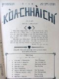
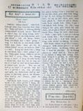
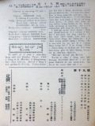
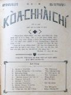
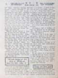
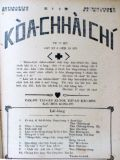

Languages
台文
｜
中文
｜
日本語
｜
English
字體
小
｜
中
｜
大
首頁
/
白話字數位典藏
白話字數位典藏全文檢索
查詢模式
選擇年代
清國時代(1885-1895)
日本時代(1895-1945)
戰後(1945-1969)
1885-1895
1896-1905
1906-1915
1916-1925
1926-1935
1936-1945
1946-1955
1956-1965
1966-1969
1970-1980
1980-1990
1990-2000
2000-2010
2010-
選擇文類
詩
散文
小說
戲劇
傳記
選擇作者
陳清忠
陳清義
編輯部
柯設偕
吳天命
明有德
偕叡廉
周天來
劉華義
王守勇
林茂生
陳添旺
王占魁
柯維思
賴仁聲
陳瓊琚
雪峰逸嵐
吳清鎰
郭水龍
蕭樂善
許水露
葉金木
陳金然
章王由
廖得
鄭連坤
楊士養
潘道榮
梁秀德
劉約翰
周淑慧
高金聲
林燕臣
黃六點
蔡愛義
許有才
主筆
巴克禮
陳鳩水
郭朝成
張基全
陳明清
陳能通
拾穗生
顏振聲
卓恆利
傳道局
胡文池
劉主安
鄭兒玉
Google Search
Yahoo Search
全部
刊名
標題
標題(教羅)
全文
全文(教羅)
作者
第12頁，共41頁(共813筆資料) 0.58553004264832sec
1
...
10
11
12
13
14
...
41
To Page
GO
文字列表
圖文列表
排序
日期
文類
刊名
作者
影像

[1927-4 芥菜子 文類-選擇文類 作者-編輯部/Phian-chip-pō͘͘]
(1)
封面 [ Hong-bīn ]
芥菜子 第 15號 1927 年 4月25號 「天國親像一粒芥菜子，人提去掖佇伊的園；這个是百項種子的第一細；到伊大叢，是較大攏總的菜蔬，紲成做樹，致到空中的鳥來歇伊的枝」 馬太13章31節 「咱若有信親像一粒芥菜子，恁就欲共這个山講，對遮徙去遐，ia̍h欲徙去；閣恁teh欲無一項袂。」 馬太17章20節 北部台灣基督長老教會 教會公報 內容 1、特別的青年 陳清義 2、赴家己的葬式 偕叡廉 譯 3、造化的奧妙 雪峰逸嵐 4、教育的意義 王守勇 ...
[1927-8 芥菜子 文類-選擇文類 作者-編輯部/Phian-chip-pō͘͘]
(1)
封面 [ Hong-bīn ]
芥菜子 第19號 1927年8月27號 「天國親像一粒芥菜子，人提去掖佇伊的園；這个是百項種子的第一細；到伊大叢，是較大攏總的菜蔬，紲成做樹，致到空中的鳥來歇伊的枝。」 馬太13章31節 「咱若有信親像一粒芥菜子，恁就欲共這个山講，對遮徙去遐，ia̍h欲徙去；閣恁teh欲無一項袂。」 馬太17章20節 北部台灣基督長老教會 教會公報 內容 1. 成聖的要緊 陳清義 2. 五旬節前的聖神佮以後的聖神 陳清忠譯 3. 馬太馬可牧師 偕叡廉 4. 「老母予蜂叮著的時」 ...

[1927-8 芥菜子 文類-散文 作者--/-]
(1)
教囝的法度 [ Kà kiáⁿ ê hoat-tō͘ ]
教囝的法度 第三章 賞罰 一家親像這國。老父做王，老母做王后，著賞罰有章程親像佇國按呢。設使有這个王共人講，寡人看百姓若著傷，不忍看伊teh受刑罰，人的確叫伊做戇的王，伊的國內也的確ta̍uh-ta̍uh擾亂，做父母也親像按呢，若kan-ta疼伊的囝。攏無責督伊，人也的確叫伊做戇的父母，箴言講，箠仔若無夠囝的身軀，無通講是疼，有人為著家己的快樂就好，無愛用好教示伊的囝兒，驚家己艱苦，愛看活過日。對按呢囝兒毋疼伊的父母，袂記得伊的父母的恩，紲變做忤逆，若責罰囝兒siuⁿ嚴，有害著囡仔，若款待囝兒siuⁿ寬，就會受災厄。 賞罰著拄好，呵咾哄喝的話，做父母的人，毋通常常講...
[1927-8 芥菜子 文類-散文 作者-陳添旺/Tân Thiam-ōng]
(1)
沉地。[龜裂] [ Tîm-toē.[ku-li̍h] ]
沉地。[龜裂] 陳添旺記。 離Lâm-khàm有一phò͘的遠，是隔壁坑，地號名陳厝坑倚佇坑頭的地。這个坑早是陳姓來開墾，所以號這个命，taⁿ嘛猶是姓陳佇遐，也有出事，閣有錢出丁，taⁿ有ná失敗。 近日人teh喊地沉落去，真濟人去看，官廳也去勘驗。 佇6月10號下晡我佮吳逢春醫生也就撥工去共伊看bāi，耳聞不如眼見，真正有親像沉地的款。 這个所在是陳恁兄的，拄佇伊的厝是周圍chiâu振動，厝地佮壁攏裂真大裂，gîm石攏pit，有的斷做koe̍h；現時人毋敢蹛佇厝內，佇場埕搭寮仔teh tiàm。 面積山佮田有五甲地以上攏振動裂痕佇無按算愛了真濟錢...

[1927-8 芥菜子 文類-散文 作者-明有德/Bêng Iú-tek]
(1)
好膽，好膽認基督 [ Hó-táⁿ, hó-táⁿ jīn Ki-tok ]
「好膽，好膽認基督」 佇1857年有這个少年人名叫Dudley Tyne。這个人是佇Huì-hú 的聖公會做牧師。彼時的人有teh議論奴隸的事。伊真反對叫遐的人毋通歹款待奴隸。伊的教會聽了有人不止受氣，共伊趕出教會。伊對彼霎就去佮遐的奴隸相佮做工。伊就想kan-ta用喙講理論是無利益，著實行是要緊。所以伊有出力去佮in做工。 伊一日因為欲hiahN麥去，割麥枝，伊的手有予彼个器具ka斷一隻。伊流真濟血，teh欲死，恬恬攏無掛慮。伊的做工伴問伊講，「你有甚麼話愛共你的親人講無？」伊應講，「我的親人是世間所有的少年人，我愛苦勸，吩咐in一句，就是： 「好膽，好膽認基督」。 ...
[1927-9 芥菜子 文類-選擇文類 作者-編輯部/Phian-chip-pō͘͘]
(1)
封面 [ Hong-bīn ]
芥菜子 第20號 1927年9月26號 「天國親像一粒芥菜子，人提去掖佇伊的園；這个是百項種子的第一細；到伊大叢，是較大攏總的菜蔬，紲成做樹，致到空中的鳥來歇伊的枝。」 馬太13章31節 「咱若有信親像一粒芥菜子，恁就欲共這个山講，對遮徙去遐，ia̍h欲徙去；閣恁teh欲無一項袂。」 馬太17章20節 北部台灣基督長老教會 教會公報 內容 1. 信心得救佮賞罰行為 陳清義譯 2. 聖冊公會 偕叡廉 3. 論「信」 柯設偕 4. 佈道參考 柯設偕 ...
[1927-9 芥菜子 文類-散文 作者-柯設偕/Koa Siat-kai]
(1)
論「信」[FAITH] [ Lūn “Sìn” [FAITH] ]
論「信」[FAITH] 「信」是甚物？ 「信」就是所向望的會實在，佮袂看見的事的併存。(希伯來11：1。) 怎樣「信」是大要緊 1. 若無「信」就袂會予上帝歡喜。(希伯來11：6) 2. 對「信」咱才有活。(加拉太2：20。) 3. 對「信」萬項事攏會。(馬太17：20。) (馬可9：23。) 「信」的源頭佮目的是甚物？ 1. 上帝是源頭。(希伯來12：2。) (彼得後書 1：1。) 2. 基督是源頭。(使徒行傳3：16。) (加拉太2：20。) 3. 聖神是源頭。(哥林多前書12：9。) 4. 人著信上帝。(馬可11：22。) (約翰6：29。) (使徒行傳2...
[1927-9 芥菜子 文類-散文 作者-柯設偕/Koa Siat-kai]
(1)
淡水教會有志佈道隊 [ Tām-suí kàu-hoē Iú-chì pò͘-tō-tuī ]
淡水教會有志佈道隊 佇今年2月，淡水教會有組織一陣。 佈道隊。名稱名叫「淡水教會。 佈道隊。 目的就是，愛傳報福音佇淡水附近的地方，通擴張上帝的聖國。 起頭有揀He-lô-á，(離淡水4 mai-英里)。因為以前有設拜堂佇遐。 逐拜六，隊員有輪流去遐佈道，演講教主日學。 遐的人真歡迎，機會通講真好。向望會漸漸發展，加添人額。 M̄-nā按呢，也有teh計畫著佇較濟所在來佈道，設主日學。 Kiám-chhái將來會通設講義所。向望讀報的兄姊，佇祈禱的時，替這个淡水教會佈道隊祈禱。 向望上帝的幫贊，會漸漸發展。...

[1927-10 芥菜子 文類-選擇文類 作者-編輯部/Phian-chip-pō͘͘]
(1)
封面 [ Hong-bīn ]
芥菜子 第21號 1927年10月27號 「天國親像一粒芥菜子，人提去掖佇伊的園；這个是百項種子的第一細；到伊大叢，是較大攏總的菜蔬，紲成做樹，致到空中的鳥來歇伊的枝。」 馬太13章31節 「咱若有信親像一粒芥菜子，恁就欲共這个山講，對遮徙去遐，ia̍h欲徙去；閣恁teh欲無一項袂。」 馬太17章20節 北部台灣基督長老教會 教會公報 內容 1. 世界的結局 陳清義 2. 兒童中心的基督教 陳清忠 3. 寄生蟲 吳清鎰 譯 4. 迷信快傳染 陳清義 ...
[1927-10 芥菜子 文類-散文 作者-吳清鎰/Gô͘ Chheng-ek]
(1)
寄生蟲 [ Kià-seng-thâng ]
寄生蟲 吳清鎰 譯 蝶(蝶)是刺毛仔蟲變的，是一般的人所知影的，總是照博物學者用顯微鏡，細膩來研究，就知無tú-tú逐尾刺毛仔蟲會變蝶仔，一尾刺毛仔蟲有的時到就親像娘仔 (蠶) kiⁿ殼仔，睏佇殼仔內。後來才變蝶，對殼仔內飛出來，總是有的就毋是按呢，時到就死去，是kan-ta chhun一个刺毛仔蟲殼nā-tiāⁿ。怎樣按呢？就是因為這个刺毛仔蟲，有予一種的胡蠅，共伊叮，紲放胡蠅兩佇刺毛仔蟲的體內(体內)佇遐孵化變做一種的寄生蟲佇刺毛仔蟲的體內(体內)，teh活。Chiah 的寄生蟲就是teh食彼款佇刺毛仔蟲的體內得欲變做蝶的分子，(分子)總是攏無傷害著刺毛仔蟲的外形 (外形)所...

[1927-10 芥菜子 文類-散文 作者-明有德/Bêng Iú-tek]
(1)
基督降世彼一時博士歡喜去揣伊 [ Ki-tok kàng-sè hit chi̍t sî Phok-sū hoaⁿ-hí khì chhē I ]
基督降世彼一時博士歡喜去揣伊 這首詩的作者是Nilliam Chatterton Qix伊佇1837年出世佇英國Bristol的所在。伊的老父是做醫生。伊本身無甚物職業，不過kan-ta著冊佮鼓舞教會的事nā-tiāⁿ。伊不時佇教會來教詩，彈琴，吟詩。伊所著的冊較濟是屬佇聖詩佮禮拜的禮式。 聖公會揀正月初六做紀念日的因端是因為彼日是gâu 的博士對東方來伯利恆欲揣平安的人君的日。遐的博士是外邦人閣是頭一擺去見耶穌。 所以才揀這日來做紀念。 不幸佇這个紀念日Qix紲破病倒佇眠床裡。這首詩就是佇床中想出--的。 這首的意思是愛予遐的外邦的博士的所行，來通...
[1927-10 芥菜子 文類-選擇文類 作者-編輯部/Phian-chip-pō͘͘]
(1)
教會報合印 [ Kàu-hoē-pò Ha̍p-ìn ]
教會報合印 北部的 「芥菜子」報，對1929年正月起欲合印佇「台灣教會報」的內面。就是欲將「北部事務」這四字換做「芥菜子」。台灣教會報這个名毋免改換，因為這个名是大會所定的，請看大會的會錄，第二回，二十四條佮第三回二十七 條，就會知較早是號做台南教會報，後來佮北部聯合，就改換做台灣教會報。也後來北部有加chhòng一款芥菜子報，起頭是一年四擺，後來改做一年十二擺，近來買去讀的人ná濟。 到本年二月中會聚集的時，有議定這个芥菜子報看是欲家己印抑是欲佮南部合印，意思是毋免chhòng兩位。若欲家己印就毋免佮南部合印，就毋免chhòng彼tó͘北部事務。因為芥菜子報是北部事務佇teh，北部的中...
[1927-11 芥菜子 文類-選擇文類 作者-編輯部/Phian-chip-pō͘͘]
(1)
封面 [ Hong-bīn ]
芥菜子 第22號 1927年11月27號 「天國親像一粒芥菜子，人提去掖佇伊的園；這个是百項種子的第一細；到伊大叢，是較大攏總的菜蔬，紲成做樹，致到空中的鳥來歇伊的枝。」 馬太13章31節 「咱若有信親像一粒芥菜子，恁就欲共這个山講，對遮徙去遐，ia̍h欲徙去；閣恁teh欲無一項袂。」 馬太17章20節 北部台灣基督長老教會 教會公報 內容 1. 約翰對基督的天職觀。 陳清義 2. 兒童中心的基督教。 陳清忠 譯 3. 信就得著。 偕叡廉 4. 耶路撒冷地動。 ...
[1927-11 芥菜子 文類-散文 作者-偕叡廉/Kai Jōe-liâm]
(1)
信就得著 [ Sìn chiū tit-tio̍h ]
信就得著 幾若月日無落雨，洘旱，作穡人無收成；無收成，就無錢通買物；無通買物；店頭就無錢趁。店頭無生理，割店直直欲倒。彼時會社長吐氣，搖頭，煩惱到極，m̄-kú無法度。所以有的錢一盡khêng-oá猶欠三十萬銀；taⁿ欲怎樣。 社長的名號做oán-lī。伊佇Oh-sū-tē-lī-a濟濟年teh做大生理。Taⁿ強強欲破產。 Teh坐的時拄著一位的朋友來探伊。朋友看伊的面憂憂就講。你teh煩惱啥事？社長in講，我teh煩惱錢。這pang生理歹做，我欠三十萬。害ah！真慘！朋友講，你的確毋通煩惱，咱是信上帝的人的確毋通過頭掛慮。你是信者，我是傳道，咱著將萬事交託主。...
[1927-11 芥菜子 文類-散文 作者-明有德/Bêng Iú-tek]
(1)
耶穌疼我！我知明 [ Iâ-so͘ thiàⁿ goá! Goá chai beng ]
耶穌疼我！我知明 aⁿa warner是美國人。伊有toà佇一所在是倚佇New York。 伊家內的人攏是做詩，gâu ji̍h琴，gâu唱歌。伊的姐妹有印幾若本；較濟是論聖詩佮音樂的事。 aⁿa Warner本身有做不止濟的詩。伊所做的詩有關係佇囡仔的款式。伊37 歲的時，有印一本故事冊。佇彼內面有應一首的詩，就是論「耶穌疼我！我知明。」 有人講，伊的囡仔彼時有破病。伊共伊照顧的時有讀聖經予伊聽，也對伊的囡仔的所想，所講來寫這首的詩。 也有人講，伊本身有親像囡仔的心肝佇teh，親像囡仔的信仰佇teh；因為伊有彼款的精神才會寫，「是耶穌疼我。」 這款的精神是倚佇耶穌所講...「恁若...
[1927-11 芥菜子 文類-散文 作者-陳清忠/Tân Chheng-tiong ]
(1)
報料 [ Pò-liāu ]
報料 芥菜子列位的讀者siu-lám：- 本報有決定對mā年正月起欲佮「台灣教會報」合印。芥菜子毋是欲廢刊，本報的特色以及內容的充實，無各樣佇以前，不過是換來chham佇「台灣教會報」內面nā-tiāⁿ。就是將「北部事務」換做「芥菜子。」頁數欲加添到20面。目的是欲予讀者較便利，較經濟的。 所以對mā年正月起發行所(北部)欲換佇淡水龍目井街書房嚴漳先生遐。屬北部的讀者，若愛繼續買，直接對嚴先生注文就-好；屬南部--的，請對南部冊房注文。 芥菜子的報料，愛勞煩列位佇本月中(抑是上慢到後月上旬)來la̍p清楚。 請照下面所定來la̍p：- 1. Boé...
[1927-5 芥菜子 文類-選擇文類 作者-編輯部/Phian-chip-pō͘͘]
(1)
新部員 [ Sin Pō͘-oân ]
新部員 今年北部教會報的部員是：- 偕叡廉 陳清義 蕭安居 張基全 陳瓊琚 柯設偕 陳清忠 其中： 主理事 偕叡廉 記事 陳清忠 按呢紹介予列位知。...

[1927-6 芥菜子 文類-選擇文類 作者-編輯部/Phian-chip-pō͘͘]
(1)
封面 [ Hong-bīn ]
芥菜子 第17號 1927 年 6月25號 「天國親像一粒芥菜子，人提去掖佇伊的園；這个是百項種子的第一細；到伊大叢，是較大攏總的菜蔬，紲成做樹，致到空中的鳥來歇伊的枝」 馬太13章31節 「咱若有信親像一粒芥菜子，恁就欲共這个山講，對遮徙去遐，ia̍h欲徙去；閣恁teh欲無一項袂。」 馬太17章20節 北部台灣基督長老教會 教會公報 內容 1. 彼得佇所羅門籠中的說教 陳清義 2. 真的工程 陳清忠 譯 3. 活活tâi 偕叡廉 4.論佇家庭中祈禱的力 ...
[1927-6 芥菜子 文類-散文 作者-陳清義/Tân Chheng-gī]
(1)
彼得佇所羅門籠中的說教 [ Pí-tek tī Só-lô-bûn lông-tiong ê Soat-kàu ]
彼得佇所羅門籠中的說教 使徒 3章12節到路尾。 彼得佮約翰佇聖殿的suí門醫治跛跤的。猶太人真奇怪，走來就近in，聚集佇所羅門的 léng-lông。這个籠大概是佇聖殿的東爿，卻聖經無講所羅門的籠是佇佗一爿，照約瑟佛的冊所記論聖殿遮的籠。有一籠佇聖殿的東爿，就是約瑟佛所建置，差不多是這个。 彼得看見眾人聚集佇遐，真奇怪，注目看in。就對in說教，請來研究佇這篇的說教中。有教示聽眾啥物，大概通講有4款，排列佇下底。 1、愛予大家知，醫治跛跤的事，毋是對家己的權能，是對信耶穌。 當時的猶太人，真奇怪。看彼得是人，怎樣會行這款。所以愛看伊，彼得講毋是對阮的才能，也毋是對阮的敬虔，來予這...
[1927-6 芥菜子 文類-散文 作者-柯設偕/Koa Siat-kai]
(1)
台灣的山佮溪 [ Tâi-oân ê soaⁿ kap khoe ]
台灣的山佮溪 佇台灣，上一萬(10000) 尺以上的山有48 个。 這tia̍p袂攏總寫遐的名佇遮；總是愛寫幾若个。 新高山 13075 尺 Chhù高山 12972 尺 秀姑巒山 12650 尺 Má-pho͘-lah-su山 12560 尺 南湖大山 12531 尺 實在佇咱台灣有真懸的山。 也台灣的溪，也是真濟條。 獨水溪 42.里(日本里) 下淡水溪 39.7里 曾文溪 33.7里 淡水河 33.1里 大甲溪 30.里 咱台灣的山水通講袂bái，不止有通呵咾...
第12頁，共41頁(共813筆資料)
1
...
10
11
12
13
14
...
41
To Page
GO
數位典藏國家型科技計劃
拓展台灣數位典藏計畫
版權所有 國立台灣師範大學 台灣文化及語言文學研究所©2008
10610 台北市和平東路一段162號│TEL 02-7734-5516│Fax 02-2358-2461
計劃簡介
典藏特色
執行架構
計畫典藏數位化流程
成員介紹
台灣白話字發展簡介
巴克禮牧師與《台灣教會公報》
廈門話字典-杜嘉德
白話字教學-打馬字
中國南方白話字發展
台灣基督教長老教會簡表
台灣基督教長老教會教會歷史委員會
《北部台灣基督長老教會教會ê歷史》
關於陳清忠
白話字文學：台灣文學的早春